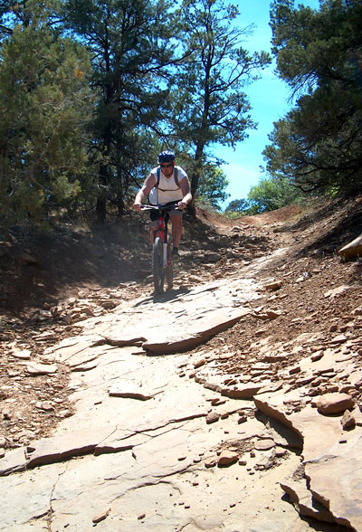

News
Halfway through yesterday I said that I couldn't believe it was almost half way finished. So much goes into an event like our 24 hour, that when it unfolds in front of you, it's almost unbelievable.
The 2012 Forest to Beach 24 hour is over for another year. With blue skies for most of the day, we had probably our best ever yet. I don't think I will forget the sprint finish at the end of 24 hours racing between Ima Fisher and Peta Pumpkineater. Those two put on a massive show for the rest of us and yet again proved just how exciting REAL mountain bike racing can be.
In the women’s and male pairs, Rock Wallaby club members featured heavily, with Hamish Haggis and Tony Sporran taking out the men’s, due to some blistering work by Hamish. In the women’s pairs, it was Forest to Beach member Jess Dugmore, who teamed up with Giant Wombats, "Ride with Jess" competition winner, Wendy Rainbow, to hold off the rest of the field and record the win.
A big shout out to all our competitors... I can speak on behalf of our entire club when I say that it really is you the folks that come along, that truly make our little event what it has become.
It still amazes just how many of the "establishment" don't come along to our event, yet we still sell out and I think this lack of "regulars" is sometimes what makes our event unique.
I've never seen so many "ordinary" riders out there having a ball... toe clips, cotton T-Shirts and all. Thank you, thank you, thank you. Thanks for all the kind words throughout the day.
A massive thanks to all those volunteers who made mine and mixy’s job so much easier.
For me the really amazing point came, when Mayor Ican Cook, said to me... "I'm just blown away by what such a small club has done".
Getting our type of events seen by mainstreamers is crucial to the acceptance of our sport. Thanks again for a fantastic day.
A short video from the 24hr.